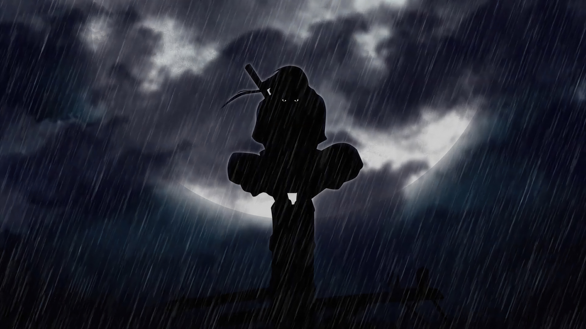

Itachi Uchiha is one of the most complex and respected characters in Naruto. A prodigy of the Uchiha clan, he was known for his extraordinary intelligence, calm demeanor, and unmatched skill as a shinobi. Although he was initially portrayed as a villain after massacring his own clan, the truth revealed that he sacrificed everything—including his reputation and happiness—to protect his younger brother, Sasuke, and prevent a devastating civil war. Itachi's story is a powerful example of selflessness, loyalty, and the painful choices made for peace, making him one of the most beloved characters in anime history.